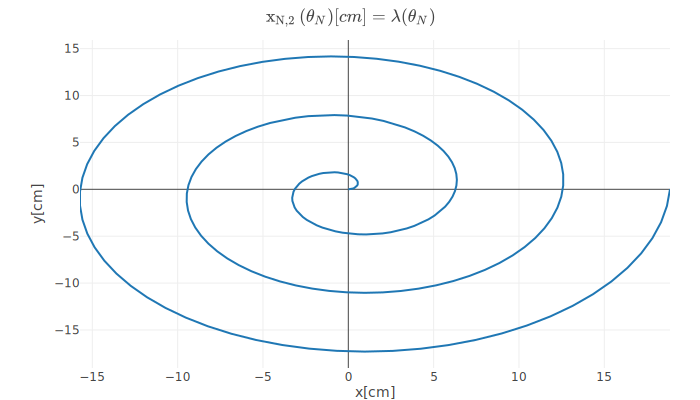
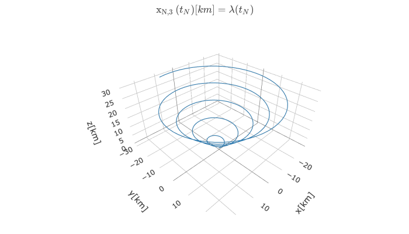
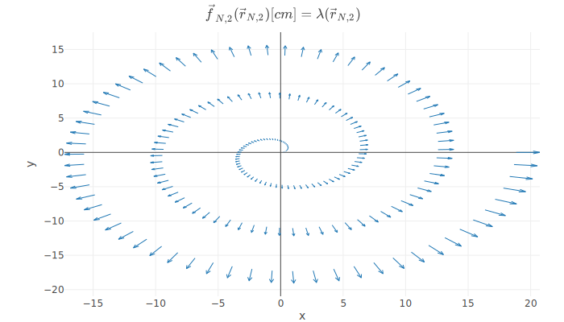
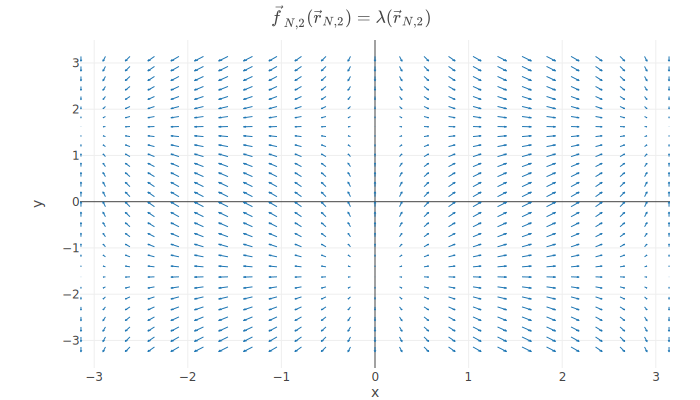
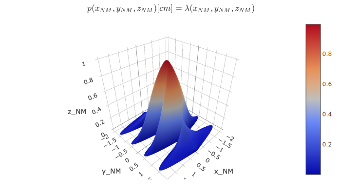
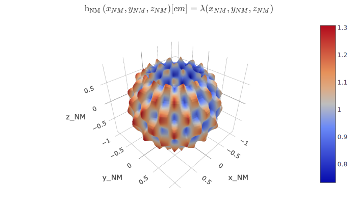
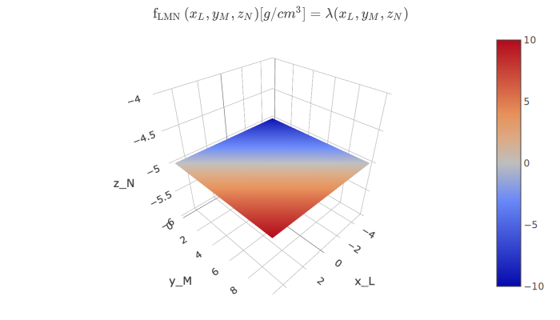

Visualization¶
Overview¶
Visualization poses a significant challenge for the space weather community: output from models and data are very domain-specific, both in content (coordinate systems, units) and in representation (file formats and data structures). On the other hand, science users also have their preferred context for analyzing these results - for instance, they may only want simulation results interpolated on a satellite trajectory and in a specific coordinate system with their own prefered units.
Kamodo aims to strike a balance between the intent of the model (or data) provider and the goals of the user, by making it easy for developers to provide context for their output and for users to easily change that context. It accomplishes this in two ways:
- By leveraging default arguments given by model and data providers
- By mapping the shape of function inputs and output to certain registered plot types
This strategy allows Kamodo to automatically generate plots for arbitrary model output and data sources, while still allowing for customization by the end user.
Available Plot Types¶
Kamodo keeps a registry of plotting functions, indexed by argument shape and output shape.
from kamodo.plotting import plot_types
plot_types
| plot_type | function | ||
|---|---|---|---|
| out_shape | arg_shapes | ||
| (1,) | ((N, M), (N, M), (N, M)) | 3d-parametric | <function surface at 0x12e9b2620> |
| (N,) | ((N,),) | 1d-line | <function line_plot at 0x11cbc3a60> |
| ((N,), (N,), (N,)) | 3d-line-scalar | <function line_plot at 0x11cbc3a60> | |
| (N, 2) | ((N,),) | 2d-line | <function line_plot at 0x11cbc3a60> |
| ((N, 2),) | 2d-vector | <function vector_plot at 0x12e9b2378> | |
| (N, 3) | ((N,),) | 3d-line | <function line_plot at 0x11cbc3a60> |
| ((N, 3),) | 3d-vector | <function vector_plot at 0x12e9b2378> | |
| (N, M) | ((N,), (M,)) | 2d-contour | <function contour_plot at 0x12e9b2488> |
| ((N, M), (N, M)) | 2d-contour-skew | <function contour_plot at 0x12e9b2488> | |
| ((N, M), (N, M), (N, M)) | 3d-parametric-scalar | <function surface at 0x12e9b2620> | |
| ((1,), (N, M), (N, M)) | 3d-plane | <function plane at 0x12e9b2598> | |
| ((N, M), (1,), (N, M)) | 3d-plane | <function plane at 0x12e9b2598> | |
| ((N, M), (N, M), (1,)) | 3d-plane | <function plane at 0x12e9b2598> | |
| (N, M, 1) | ((1,), (N,), (M,)) | 3d-plane | <function plane at 0x12e9b2598> |
| ((N,), (1,), (M,)) | 3d-plane | <function plane at 0x12e9b2598> | |
| ((N,), (M,), (1,)) | 3d-plane | <function plane at 0x12e9b2598> |
When a user tries to plot a given variable, a lookup is made into the table above and the corresponding plotting function is used to generate the output. Examples below demonstrate the intended workflow.
1-Dimensional line plots¶
from kamodo import Kamodo, kamodofy
kamodo = Kamodo('g_N[kg] = x_N**2')
kamodo['f[g]'] = 'g_N'
kamodo
Here we have defined a function which returns an array of shape . As input, it takes one argument which also has size . We also generate a function which is the same as but with a different units.
Note
We could have named the function instead of . The variable names have no bearing on the resulting plots - only the argument input shapes and output shapes matter.
When we call Kamodo's plot function, we define which variable we are plotting and domain over which the arguments are applied:
import numpy as np
import plotly.io as pio
fig = kamodo.plot(f = dict(x_N = np.linspace(-4, 3, 30)))
pio.write_image(fig, 'images/1d-line.svg')

This is the graph for .
Time series data¶
The process for time series data is the same, except we use a pandas datetime index for the input argument.
import pandas as pd
t_N = pd.date_range('Nov 9, 2018', 'Nov 20, 2018', freq = 'H')
@kamodofy(units = 'kg/m^3')
def rho_N(t_N = t_N):
dt_days = (t_N - t_N[0]).total_seconds()/(24*3600)
return 1+np.sin(dt_days) + .1*np.random.random(len(dt_days))
kamodo = Kamodo(rho_N = rho_N, verbose = False)
kamodo
fig = kamodo.plot('rho_N')
In this case, we only need to name the variable we wish to plot, because we have already defined a function with a default parameter for .
pio.write_image(fig, 'images/1d-time-series.svg')

Note
By providing default parameters, the function author can insure that anyone plotting the variable will not need to know where to place resolution!
2-D Parametric charts¶
For 2-D Plots, the output function must have input shape and output shape .
from kamodo import Kamodo
@kamodofy(units = 'cm')
def x_Ncomma2(theta_N = np.linspace(0,6*np.pi, 200)):
r = theta_N
x = r*np.cos(theta_N)
y = r*np.sin(theta_N)
return np.array(list(zip(x,y)))
kamodo = Kamodo(x_Ncomma2 = x_Ncomma2)
kamodo
Here, we again provide a default array for so the end user does not need to:
fig = kamodo.plot('x_Ncomma2')
pio.write_image(fig, 'images/fig-2d.svg')

3-Dimensional parametric curves¶
For 3-D parametric curves, the output function must have input shape and output shape .
@kamodofy(units = 'km')
def x_Ncomma3(t_N = pd.date_range('Nov 12, 2018', 'Dec 30, 2018', freq = '4 H')):
dt_days = (t_N - t_N[0]).total_seconds()/(24*3600)
theta = dt_days*np.pi/5
r = theta
x = r*np.cos(theta)
y = r*np.sin(theta)
z = r
return np.array(list(zip(x,y,z)))
kamodo = Kamodo(x_Ncomma3 = x_Ncomma3)
kamodo
fig = kamodo.plot('x_Ncomma3')
pio.write_image(fig, 'images/3d-line.svg')

Functions of three N-d arrays are also interpreted as 3D parametric plots, but with an additonal color component.
s = np.linspace(0, 8*np.pi, 100)
x = 10*np.sin(s/8)
y = 10*np.sin(s)
z = s
@kamodofy(units = 'kg')
def f_N(x_N = x, y_N = y, z_N = z):
return x_N**2+y_N**2+z_N**2
kamodo = Kamodo(f_N = f_N)
kamodo
fig = kamodo.plot('f_N')
pio.write_image(fig, 'images/3d-points.svg')

Vector fields¶
Kamodo generates a 2-d vector (quiver) plot for functions of one variable, if both the input and output have shape (N,2). The input positions are assumed to be , and the output vectors are assumed to be ,
theta_N = np.linspace(0,6*np.pi, 200)
r = theta_N
x = r*np.cos(theta_N)
y = r*np.sin(theta_N)
points = np.array(list(zip(x,y)))
@kamodofy(units = 'cm')
def fvec_Ncomma2(rvec_Ncomma2 = points):
return rvec_Ncomma2
kamodo = Kamodo(fvec_Ncomma2 = fvec_Ncomma2)
kamodo
fig = kamodo.plot('fvec_Ncomma2')
pio.write_image(fig, 'images/fig2d-vector.svg')

If we wish to represent a grid of vectors, we must first unravel the grid as a string of points.
x = np.linspace(-np.pi, np.pi, 25)
y = np.linspace(-np.pi, np.pi, 30)
xx, yy = np.meshgrid(x,y)
points = np.array(list(zip(xx.ravel(), yy.ravel())))
def fvec_Ncomma2(rvec_Ncomma2 = points):
ux = np.sin(rvec_Ncomma2[:,0])
uy = np.cos(rvec_Ncomma2[:,1])
return np.vstack((ux,uy)).T
kamodo = Kamodo(fvec_Ncomma2 = fvec_Ncomma2)
kamodo
fig = kamodo.plot('fvec_Ncomma2')
pio.write_image(fig, 'images/fig2d-vector-field.svg')

3D vector fields¶
Functions representing 3D vector fields should have one argument of shape (N,3) and an output shape of (N,3)
x, y, z = np.meshgrid(np.linspace(-2,2,4),
np.linspace(-3,3,6),
np.linspace(-5,5,10))
points = np.array(list(zip(x.ravel(), y.ravel(), z.ravel())))
def fvec_Ncomma3(rvec_Ncomma3 = points):
return rvec_Ncomma3
kamodo = Kamodo(fvec_Ncomma3 = fvec_Ncomma3)
kamodo
fig = kamodo.plot('fvec_Ncomma3')
pio.write_image(fig, 'images/fig3d-vector.svg')

Contour plots¶
Scalar functions of two variables of size (N) and (M) and output size (N,M) will generate contour plots. Kamodo can handle both ij indexing and xy indexing.
from kamodo import Kamodo
@kamodofy(units = 'cm^2')
def f_NcommaM(x_N = np.linspace(0, 8*np.pi,100), y_M = np.linspace(0, 5, 90)):
x, y = np.meshgrid(x_N, y_M, indexing = 'xy')
return np.sin(x)*y
kamodo = Kamodo(f_NcommaM = f_NcommaM)
kamodo
fig = kamodo.plot('f_NcommaM')
pio.write_image(fig, 'images/fig2d-contour.svg')

Since and have differnt sizes, we could have used indexing=ij as an argument to meshgrid and kamodo would have produced the same figure - Kamodo swaps the ordering where appropriate. In the event that both arguments have the same size, we can pass an indexing argument as an option to the plot function.
@kamodofy(units = 'cm^2')
def f_NN(x_N = np.linspace(0, 8*np.pi, 90), y_N = np.linspace(0, 5, 90)):
x, y = np.meshgrid(x_N, y_N, indexing = 'xy')
return np.sin(x)*y
kamodo = Kamodo(f_NN = f_NN)
kamodo
fig = kamodo.plot(f_NN = dict(indexing = 'xy'))
pio.write_image(fig, 'images/fig2d-contour-xy.svg')

Skew (Carpet) Plots¶
Functions of two arguments each having shape (N,M) matching the output shape will produce skewed contour plots, whereby the x and y components of the grid are independent.
r = np.linspace(1, 3, 20)
theta = np.linspace(0, np.pi, 14)
r_, theta_ = np.meshgrid(r,theta)
XX = r_*np.cos(theta_)
YY = r_*np.sin(theta_)
@kamodofy(units = 'cm^2')
def f_NM(x_NM = XX, y_NM = YY):
return np.sin(x_NM)+y_NM
kamodo = Kamodo(f_NM = f_NM)
kamodo
fig = kamodo.plot('f_NM')
pio.write_image(fig, 'images/fig2d-skew.svg')

Parametric surfaces¶
To generate a purely geometrical parametric surface, supply a functions of three variables, each of size (N,M) and of output shape (1).
from kamodo import Kamodo
u = np.linspace(-2, 2, 40)
v = np.linspace(-2, 2, 50)
uu, vv = np.meshgrid(u,v)
@kamodofy(units = 'cm')
def parametric(x_NM = uu*np.sin(vv*np.pi),
y_NM = vv,
z_NM = np.exp(-uu**2-vv**2)):
return np.array([1])
kamodo = Kamodo(p = parametric)
kamodo
fig = kamodo.plot('p')
pio.write_image(fig, 'images/3d-parametric.svg')

To control the color of the parametric surface, have the output shape be (N,M).
R = 1
theta = np.linspace(.2*np.pi, .8*np.pi, 40)
phi = np.linspace(0, 2*np.pi, 50)
theta_, phi_ = np.meshgrid(theta, phi)
r = (R +.1*(np.cos(10*theta_)*np.sin(14*phi_)))
xx = r*np.sin(theta_)*np.cos(phi_)
yy = r*np.sin(theta_)*np.sin(phi_)
zz = r*np.cos(theta_)
@kamodofy(units = 'cm')
def spherelike(x_NM = xx, y_NM = yy, z_NM = zz):
return .1*x_NM + x_NM**2 + y_NM**2 + z_NM**2
kamodo = Kamodo(h_NM = spherelike)
kamodo
fig = kamodo.plot('h_NM')
pio.write_image(fig, 'images/3d-parametric-color.svg')

Map-to-plane¶
We often need to produce slices through a volumetric grid of data. This may be accomplished through the use of volumetric grid interpolators equipped with default values for each of the input arguments. Suppose such a function has default input arguments of size (L), (M), (N), and output shape (L,M,N), then a cartesian plane will be generated if the user overrides one of these defaults (e.g. setting ).
@kamodofy(units = 'g/cm^3')
def f_LMN(
x_L = np.linspace(-5, 5, 50),
y_M = np.linspace(0, 10, 75),
z_N = np.linspace(-20, 20, 100)):
xx, yy, zz = np.meshgrid(x_L,y_M,z_N, indexing = 'xy')
return xx + yy + zz
kamodo = Kamodo(f_LMN = f_LMN)
kamodo
fig = kamodo.plot(f_LMN = dict(z_N = -5))
pio.write_image(fig,'images/fig2d-map-to-plane.svg')

Tip
By providing appropriate defaults for the undelying grid structure, the interpolator author can ensure that the user can generate figures with optimal resolution!
Multiple traces¶
Kamodo supports multiple traces in the same figure. Simply provide plot with multiple function-argument pairs.
from kamodo import Kamodo
t_N = pd.date_range('Nov 9, 2018', 'Nov 20, 2018', freq = 'H')
@kamodofy(units = 'kg/m^3')
def rho_N(t_N = t_N):
dt_days = (t_N - t_N[0]).total_seconds()/(24*3600)
return 1+np.sin(dt_days) + .1*np.random.random(len(dt_days))
@kamodofy(units = 'nPa')
def p_N(t_N = t_N):
dt_days = (t_N - t_N[0]).total_seconds()/(24*3600)
return 1+np.sin(2*dt_days) + .1*np.random.random(len(dt_days))
kamodo = Kamodo(rho_N = rho_N, p_N = p_N, verbose = False)
kamodo
fig = kamodo.plot('p_N','rho_N')
pio.write_image(fig, 'images/multi-trace.svg')

Note
Plot types must be compatible for kamodo to plot different variables on the same axes.
Kamodo can also handle multiple traces in 3D
from kamodo import Kamodo, kamodofy
@kamodofy(units = 'g/cm^3')
def f_LMN(
x_L = np.linspace(-5, 5, 50),
y_M = np.linspace(0, 10, 75),
z_N = np.linspace(-20, 20, 100)):
xx, yy, zz = np.meshgrid(x_L,y_M,z_N, indexing = 'xy')
return xx + yy + zz
kamodo = Kamodo(f_LMN = f_LMN, g_LMN = f_LMN)
kamodo
fig = kamodo.plot(f_LMN = dict(z_N = 0),
g_LMN = dict(y_M = 5))
pio.write_image(fig, 'images/multi-trace3d.svg')

Bug
Multiple traces results in different colorbars which may overlap. More control over the layout will be available in future updates.
Interactive Plotting¶
For interactive 3d plots, we take advantage of Plotly's in-browser plotting library.
from plotly.offline import iplot, plot, init_notebook_mode
To generate a separate interactive html page, use iplot instead of plot:
plot(fig, filename = 'sample_plot.html') #uncomment to render 3D interactive plot in this cell
'sample_plot.html'
navigate to the 3d interactive plot: sample_plot.html.
Alternatively, you may work with interactive plots directly in jupyter notebooks:
# init_notebook_mode() # uncomment to initialize plotly for notebook
# iplot(fig) #uncomment to render 3D interactive plot in this cell
Note
We have commented out the above lines because they do not render properly on the documentation server, but rest assured they do work!